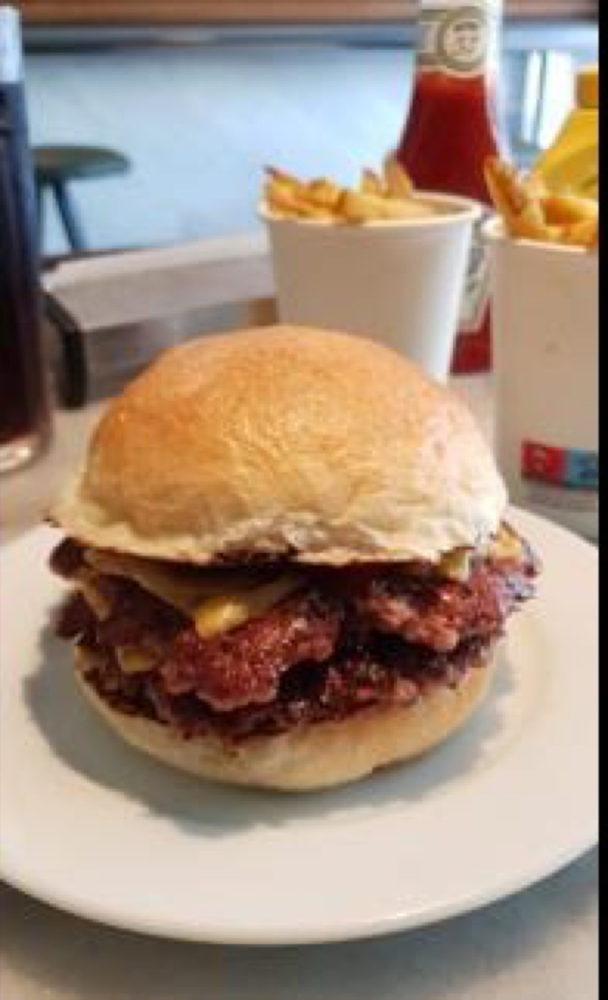
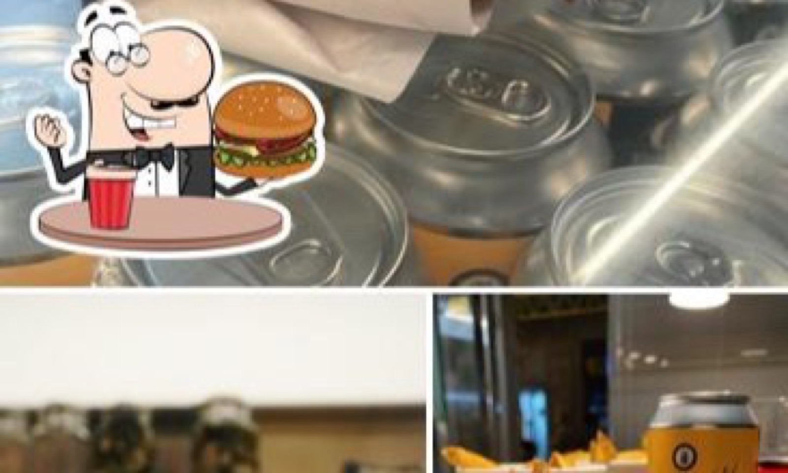
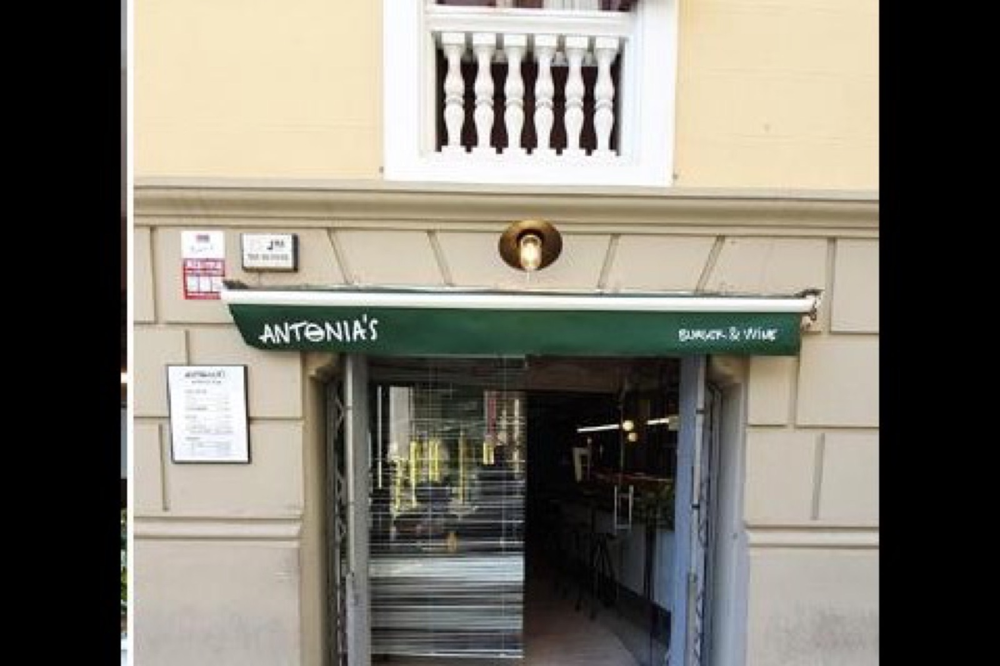
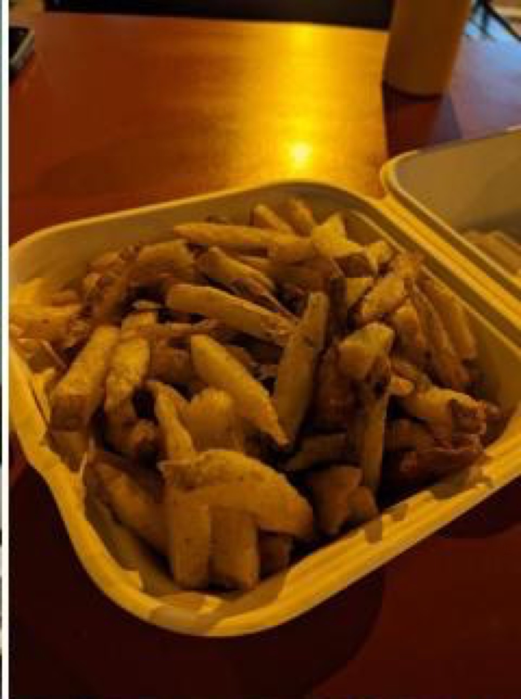
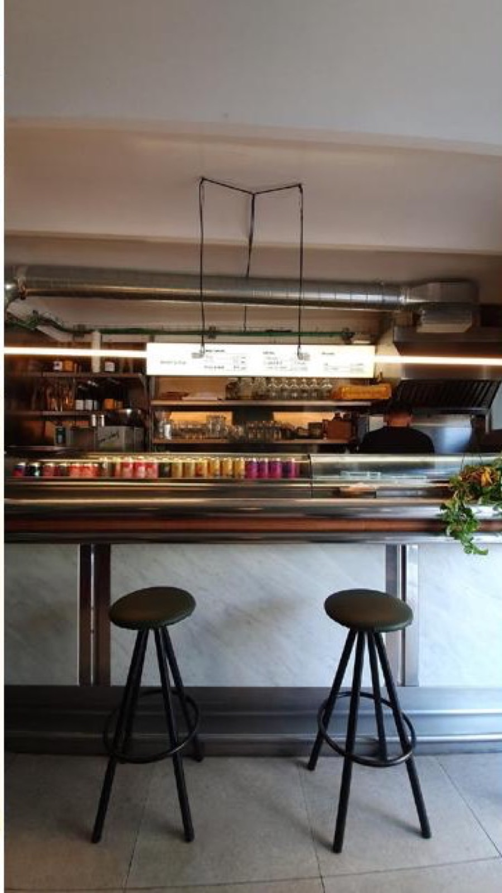
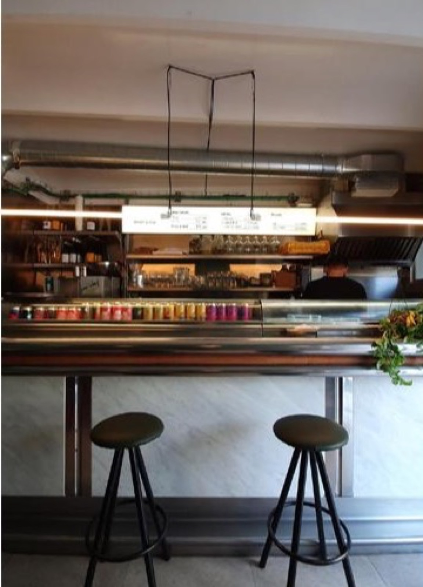
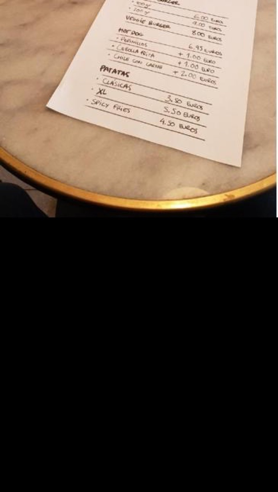
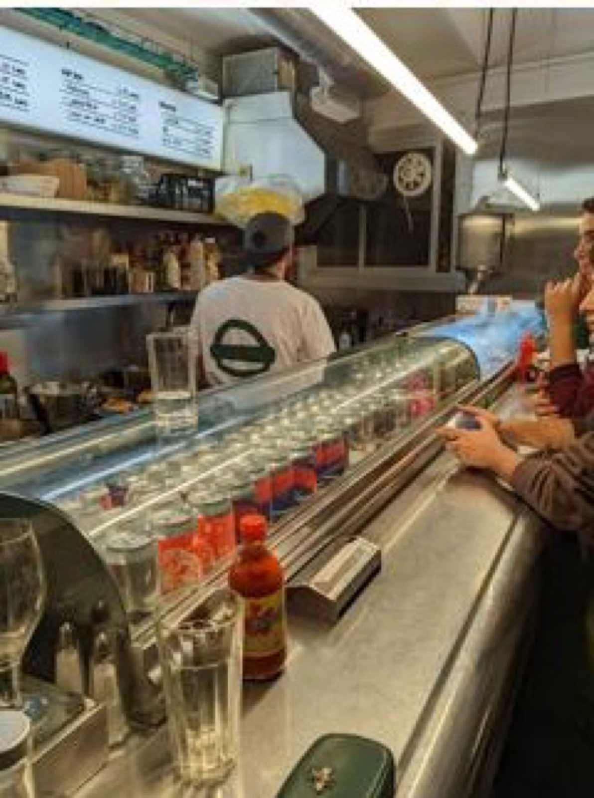
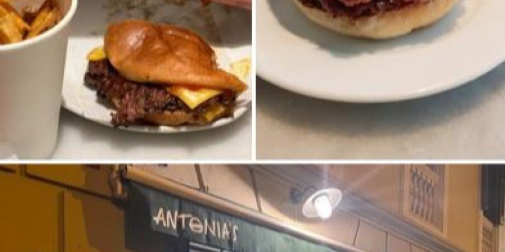

Carne picada del día
Ternera nacional picada en casa cada mañana. Mezcla con porcentaje de grasa pensado para chapa, no para parrilla. Se trabaja en bola, nunca prensada antes.
Smash burger · Putxet · Sant Gervasi
Pequeñita. Carta corta. Una sola idea bien clara: pan brioche, dos chapas de carne aplastadas a fuego brutal y patatas frescas cortadas el mismo día. Hamburguesa de 100 gramos a seis euros, doble a nueve, vinos naturales en la barra y poco más. Tan honesta que casi avergüenza.

Cheese 200 g · 9 €El método Antonia's
No hay carta de quince hamburguesas con nombres pomposos. Hay una manera de hacer las cosas, y lleva cuatro pasos. El resto es repetirlos cada día desde 2023 sin desviarse.
Ternera nacional picada en casa cada mañana. Mezcla con porcentaje de grasa pensado para chapa, no para parrilla. Se trabaja en bola, nunca prensada antes.
La bola cae en plancha al rojo y se aplasta hasta dejarla finita. Se forma la corteza Maillard caramelizada que firma una buena smash. Punto único: jugoso por dentro, crujiente fuera.
Pepinillos encurtidos en casa con la receta de la abuela. Salsa Antonia's, mostaza amarilla suave, ketchup Heinz para los puristas. Cebolla pochada si te apetece.
Patata pelada, cortada y blanqueada el mismo día. Doble fritura. Clásicas, XL para compartir o spicy para los que andan despiertos. Crujientes por fuera, mantequilla por dentro.
La carta · escrita a mano
La carta de Antonia's cabe en un folio porque está escrita literalmente en un folio. Cheese burger, hot dog, veggie y tres tipos de patata. Si quieres algo más sofisticado, hay veinte referencias de vino natural en la barra.
La de siempre. Una chapa de carne picada del día, queso americano fundido, pepinillos caseros, salsa Antonia's, pan brioche tostado. Tres bocados de honestidad pura.
La hermana mayor. Dos chapas de carne smash apiladas, doble queso americano, pepinillos, salsa, pan brioche. Para los que vinieron a comer, no a mirar la foto en Instagram.
Para los no carnívoros. Hamburguesa vegetal con los mismos pepinillos caseros y la salsa de la casa, mismo pan brioche tostado. Sin pretensiones de imitar la otra: solo de ser buena por sí misma.
Salchicha frankfurt en pan tostado. Tres adiciones opcionales a un euro cada una: pepinillo, cebolla frita o chile con carne (este último, dos euros). Sencillo, contundente, completamente sin postureo.
El acompañamiento que ha levantado a esta casa. Patata fresca pelada y cortada el día, doble fritura. Tres versiones: Clásicas para acompañar, XL para compartir mesa y Spicy para los que necesitan despertarse del todo.
Precios indicativos según carta vigente en el local · Sujetos a cambio · Vinos naturales por copas desde 3,50 €
Sí, hemos dicho seis euros. Sí, en Sant Gervasi. Llevamos dos años escuchando que es imposible que esto siga así. Pues sigue así.
El local
Una barra de mármol, taburetes negros, tubo plateado al techo, plantas en la encimera y una carta colgada que se escribe a mano. Es el primer Antonia's de la familia: aquí empezó todo en 2023.








Preguntas frecuentes
El local es pequeñito y las preguntas se repiten. Aquí van las cuatro que escuchamos cada semana. Si la tuya no está, llama al 931 14 85 79 y la resolvemos en treinta segundos.
El local del Putxet es muy pequeñito y funciona principalmente sin reserva: se entra, se pide en la barra y se come. Si quieres asegurarte sitio en horas punta (sábado mediodía, viernes noche) puedes solicitar una reserva mediante el formulario de esta web y el equipo te llamará para confirmar disponibilidad. Para grupos de cuatro o más personas siempre es recomendable avisar antes por teléfono.
Sí. Antonia's Burger sirve a domicilio en la zona del Putxet y Sant Gervasi a través de Uber Eats. La carta a domicilio es la misma que en el local: cheese burger de 100 g o 200 g, hot dog con sus tres adiciones y las patatas en sus tres versiones. La hamburguesa se prepara al momento del pedido para que llegue lo más caliente posible y se envuelve en papel parafinado para que el pan no se humedezca por el camino.
Entre semana al mediodía, sobre las 13:30, hay sitio sin problema. Las horas punta son los viernes y sábados desde las 14:00 hasta el cierre del servicio de comida, y por las noches a partir de las 21:00. Si vas en domingo, lo recomendable es ir antes de las 14:00 o probar suerte sobre las 22:00. La barra rota rápido: una smash burger se come en quince minutos, así que aunque veas el local lleno la espera suele ser corta.
Sí, en la carta hay una veggie burger fija pensada para no carnívoros, hecha con una hamburguesa vegetal y los mismos toppings caseros que las de carne (pepinillos, cebolla, salsas de la casa). El pan brioche estándar contiene gluten, por lo que de momento no se ofrece versión sin gluten certificada. Las patatas se fríen en aceite limpio dedicado, pero al compartir cocina con productos con gluten no se garantiza ausencia total de trazas.
Visitar el Putxet
Esquina con calle Putxet. Cinco minutos andando desde el FGC El Putxet, doce minutos desde Pl. Lesseps. Local pequeñito con la fachada amarilla y el toldo verde: si ves a gente comiendo de pie en la calle, has llegado.
Carrer de Teodora Lamadrid, 1
08022 Barcelona · Sant Gervasi · Putxet
Tel. 931 14 85 79
FGC El Putxet · 5 min andando
Esto era una demo
Esta web era una muestra de lo que podríamos hacer para Antonia's Burger. Si te ha gustado y quieres una para tu negocio, escríbenos — Pedro te responde personalmente y la web final la adaptamos al 100% a tu gusto.
Pedro Núñez · Impacto Digital